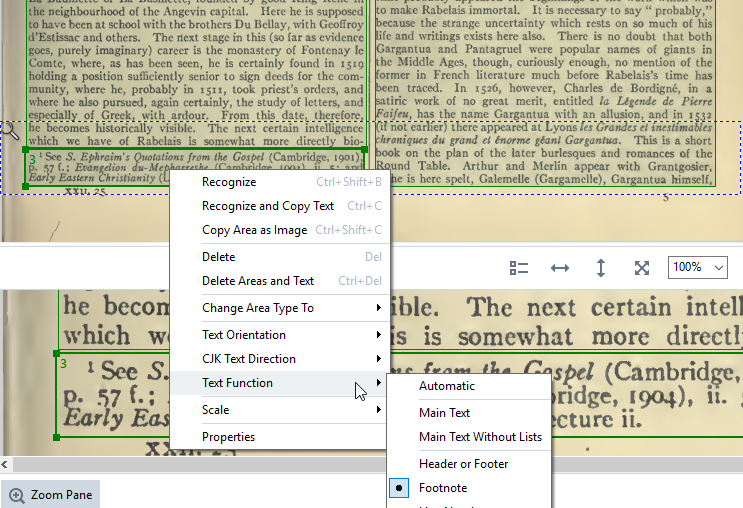

Footnote Areas
Footnotes always output as the last areas on the page.
Draw separate boxes for footnotes. Treat multiple footnotes at the end of a column as a single area. All footnotes on a page should output at the end of page, following the end of the text in column two. This requires special treatment, depending on whether there are footnotes in column one only, both columns, or column two only.
Note: If you enconter footnote text that runs over to the next page,
insert a comment in the Page-Inventory File to alert the person doing
the conversion to TEI, so the problem can be corrected there.
Footnotes in column one only
- Draw the box for the footnotes last. If necessary, reorder the boxes so that it is the last box to output on the page.
- Right-click in the footnote box. Go to . AFR will output the footnotes last.
Figure: Context menu for footnotes

Footnotes in both columns
- Draw the boxes for the footnotes last. If necessary, reorder the boxes to make the footnote box in column one output next-to-last, and the footnote box in column two to output last.
- Right-click in each footnote box. Go to . AFR will output both footnote boxes in order after all text.
Footnotes in column two only
You do not need to draw a separate box for footnotes. Since they will output last anyway, include them in the text box for column two.